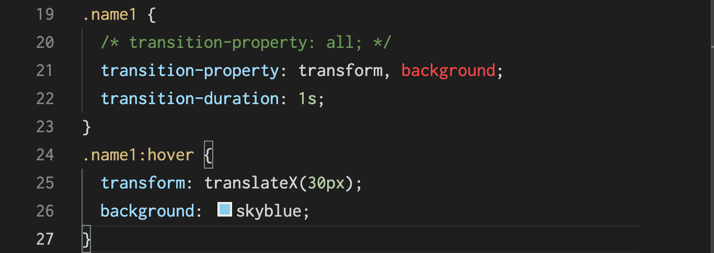
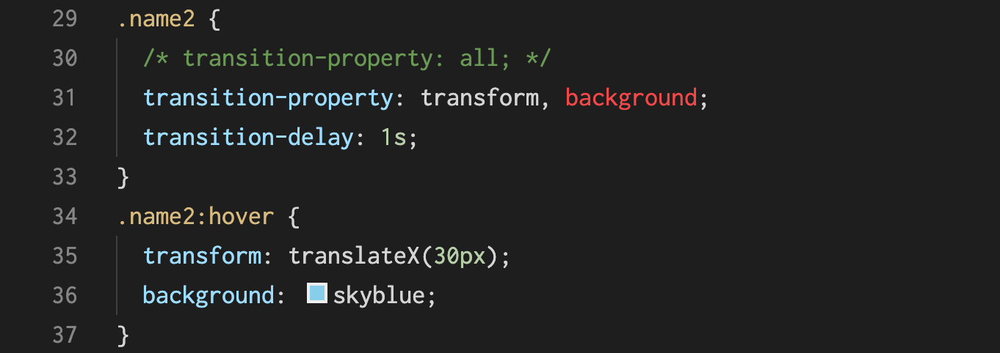
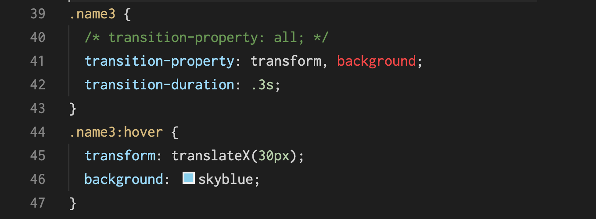
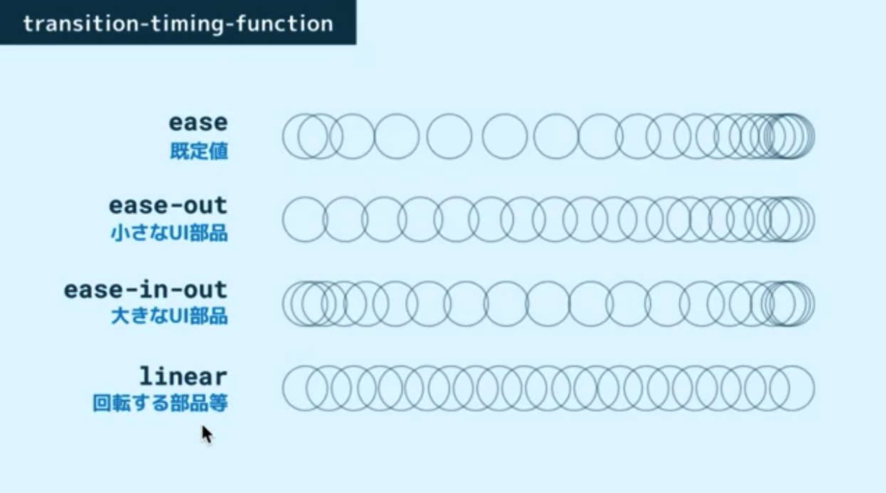
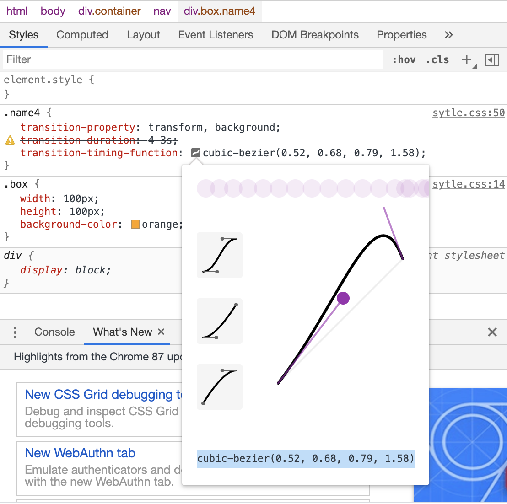
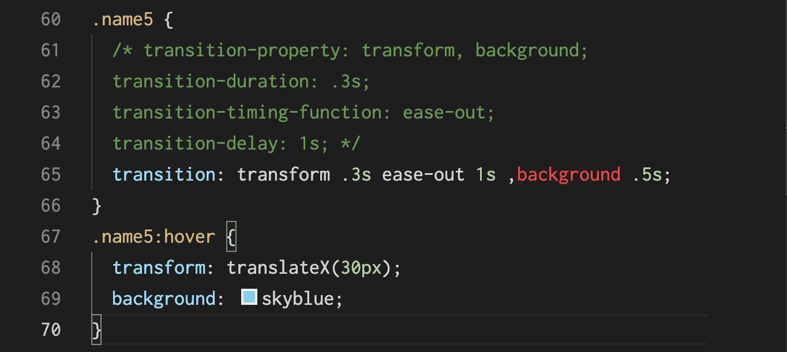

transition-property
どのプロパティをトランジションの対象にするかを指定する
全てのプロパティを transition の対象にしたい場合は all としてあげても OK
アニメーションさせたくないものまでアニメーションしてしまうこともあるので、明示的にプロパティを指定したほうが良い

Chromeのバグの回避方法
なんらかのスクリプトを読み込めば OK
script タグの間に半角空白を入れるだけでもOK
transition-delay
アニメーションが開始するまでの時間を設定できる。

transition-duration
アニメーションが開始するまでの時間を設定できる。
UI では大体 0.3 秒くらいが小気味良い速度と言われています。
単位指定の0は省略できます。

transition-timing-function
アニメーションの速度に緩急をつける

デベロッパーツールで動きを自作する
アニメーションが開始するまでの時間を設定できる。

transitionの一括指定
transition という一括指定プロパティを使ってあげれば OK。
順不同かつ省略可で指定していくことができる。
時間っぽい値をふたつ指定すると、最初のが duration 、次の値が delay の指定になる。
複数のプロパティを変化させた場合はカンマ区切りで指定を書く。
